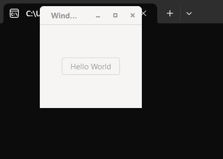

在Windows 11上安装GTK4

在Win11上安装GTK4
本文包括了作者在安装过程中遇到的坑...
安装过程在的Sandbox里经过测试:
安装过程
1. 下载并安装Msys2
本教程使用默认安装路径，如使用自定义，在后文设置PATH时需要注意
从官网下载 Msys2，并安装
点击Finish后弹出命令行界面，根据Msys2的文档，我们首先安装gcc
pacman -S mingw-w64-ucrt-x86_64-gcc
- 回车开始安装。
2. 安装GKT4库和toolchain
要安装GKT4，在终端输入
pacman -S mingw-w64-x86_64-gtk4
为了在windows上使用GNU/Make，输入
pacman -S mingw-w64-x86_64-toolchain base-devel
都是一路回车选择默认
3. 设置Path
打开 Path设置 细节不赘述
在系统变量里找到Path,打开后加上你的安装路径 /mingw64/bin ，（对我来说就是 C:/msys64/mingw64/bin ）
再新建一个 C:/msys64/usr/bin ，点击确定保存。
由于我们要使用 make 命令,而Msys2默认把它命名为"mingw32-make"。所以我们进入刚刚输入的目录（C:/msys64/mingw64/bin），找到 mingw32-make 重命名（或者ctrl+c,ctrl+v生成一个副本），命名为make。
此时我们再打开cmd(Win+R)，输入 make -v ,发现已经可以运行了。
接着再在cmd中试一下命令 pkg-config --cflags --libs gtk4 ，如果有类似下面的输出，就说明成功了：
-IC:/msys64/mingw64/bin/../include/gtk-4.0 -IC:/msys64/mingw64/bin/../include/pango-1.0 -IC:/msys64/mingw64/bin/../include -IC:/msys64/mingw64/bin/../include/glib-2.0 -IC:/msys64/mingw64/bin/../lib/glib-2.0/include -IC:/msys64/mingw64/bin/../include/harfbuzz -IC:/msys64/mingw64/bin/../include/freetype2 -IC:/msys64/mingw64/bin/../include/libpng16 -IC:/msys64/mingw64/bin/../include/fribidi -IC:/msys64/mingw64/bin/../include/cairo -IC:/msys64/mingw64/bin/../include/pixman-1 -IC:/msys64/mingw64/bin/../include/gdk-pixbuf-2.0 -IC:/msys64/mingw64/bin/../include/webp -DLIBDEFLATE_DLL -IC:/msys64/mingw64/bin/../include/graphene-1.0 -IC:/msys64/mingw64/bin/../lib/graphene-1.0/include -mfpmath=sse -msse -msse2 -LC:/msys64/mingw64/bin/../lib -lgtk-4 -lpangowin32-1.0 -lpangocairo-1.0 -lpango-1.0 -lharfbuzz -lgdk_pixbuf-2.0 -lcairo-gobject -lcairo -lgraphene-1.0 -lgio-2.0 -lgobject-2.0 -lglib-2.0 -lintl
4. Hello World
新建一个文件夹，这里就叫demo,在里面创建demo.c (Shift+右键文件资源管理器，在该目录下打开powershell，输入 notepad demo.c )
这里使用GTK官方的实例：
#include <gtk/gtk.h> static void activate(GtkApplication* app, gpointer user_data) { GtkWidget* window; window = gtk_application_window_new(app); gtk_window_set_title(GTK_WINDOW(window), "Window"); gtk_window_set_default_size(GTK_WINDOW(window), 200, 200); gtk_widget_show(window); } int main(int argc, char** argv) { GtkApplication* app; int status; app = gtk_application_new("org.gtk.example", G_APPLICATION_DEFAULT_FLAGS); g_signal_connect(app, "activate", G_CALLBACK(activate), NULL); status = g_application_run(G_APPLICATION(app), argc, argv); g_object_unref(app); return status; }
- 保存后回到命令行，再创建一个名为 makefile 的文件，输入以下内容：
保存后运行 make 命令，exe文件就会再 ./out 文件夹下生成。

总结
到这里，安装已经基本结束了。可以发现在Windows下安装配置C语言的环境相比Linux来说，体验上差很多。
所以在这里推荐大家使用Gentoo，并使用 emerge -a gui-libs/gtk 终结本文（
如果还有其他问题，欢迎在此讨论，有能力者自行Google(Baidu)。
至于使用 Vcpkg 安装以及对 Vistual Studio 的支持，以后会再补充。